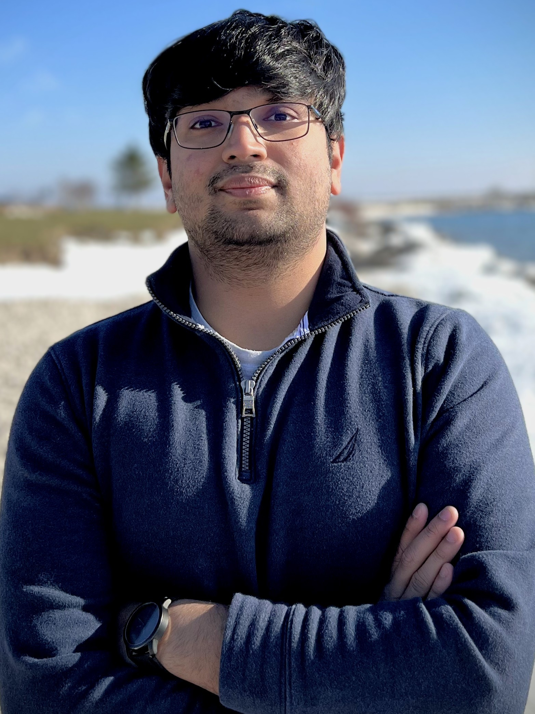

Sayan Chakrabarty
Postdoctoral Research Fellow
Department of Statistics
University of Michigan
About Me
Hi! My name is Sayan. I am a Postdoctoral Research Fellow in Statistics at the University of Michigan. My postdoc advisors are Liza Levina and Ji Zhu. I received a PhD in Statistics from the University of Illinois Urbana-Champaign in 2024, advised by Yuguo Chen and Srijan Sengupta.
My research interests lie in network analysis, subsampling and bootstrapping for complex data and uncertainty quantification. More broadly, I am interested in scalable statistical inference for complex data structures, and principled applications of machine learning tools in biological sciences and medicine.